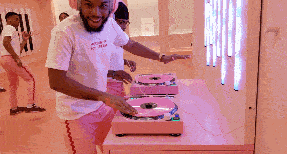
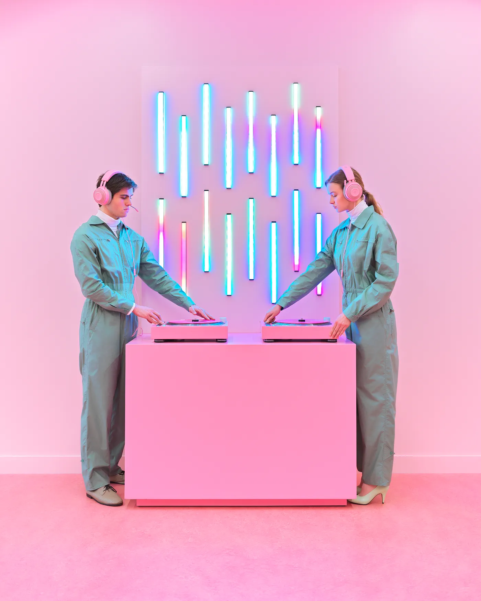
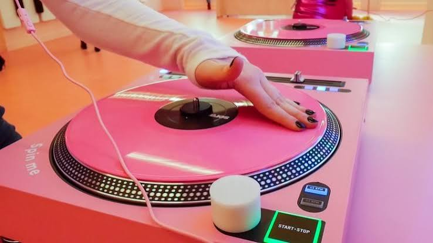
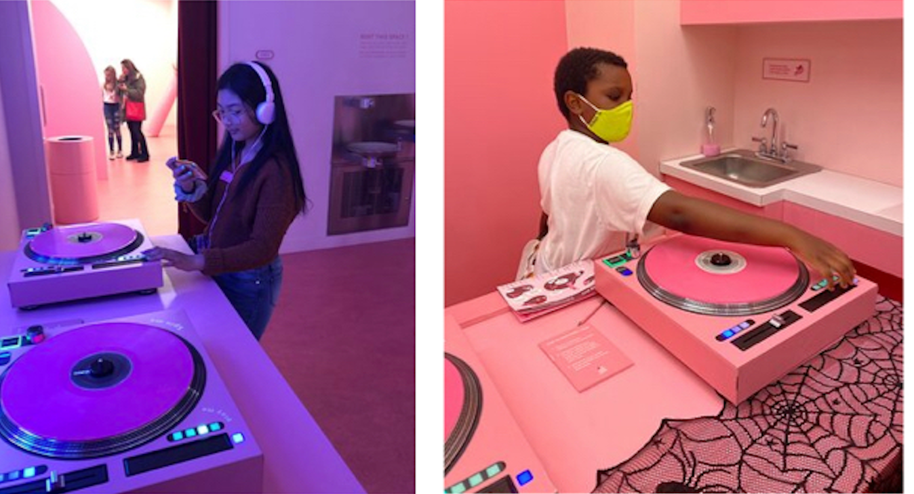
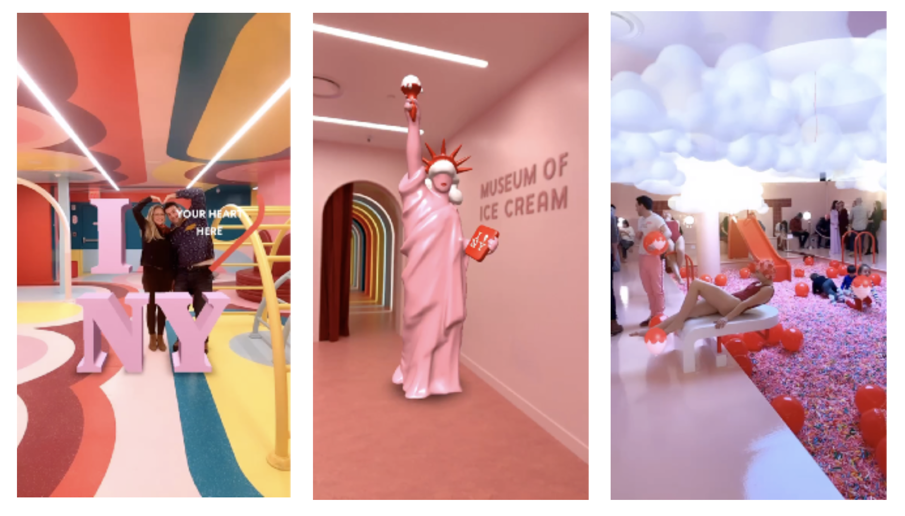
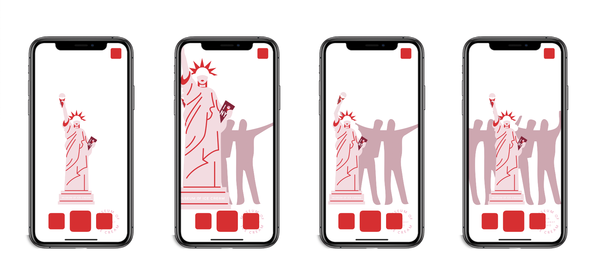
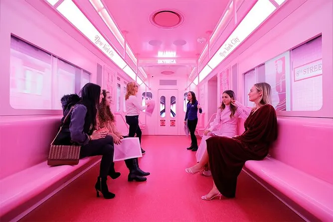
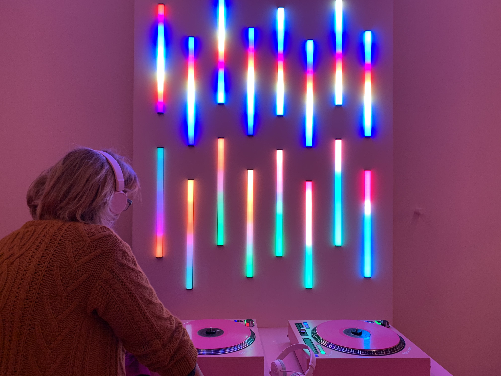

Museum of Ice Cream Digital Interactive Installations
A suite of digital interactives for Museum of Ice Cream in SoHo — a light-and-sound DJ booth, an augmented reality activation, and an animated flying subway car above Manhattan.
Overview
I led the hardware and software design of an interactive DJ booth for the Museum of Ice Cream’s music room in SoHo. Guests become dueling DJs on real DJ controllers, mixing the music in their headphones while also controlling the room’s animated lighting.
The engagement also included an augmented reality activation for guests — digital layers that turn the pink museum into a place to pose with branded, ice-cream-twisted New York landmarks through their phones.
Alongside that, I designed an animated interactive of a flying subway car above Manhattan: a full pink “SKYBECA” car where windows and motion sell the fantasy of riding the subway through the sky over the city.
The Experience
Real controllers
Guests use real turntable controllers to control playback of the music in their headphones.
One-to-one light
The turntable also drives the room’s lighting in a direct one-to-one interaction: when a guest stops, slows down or speeds up the turntable, the light animations stop, slow down or speed up with it.
Dueling DJs
Two stations let guests go head-to-head as dueling DJs, turning the room into a shared performance.
How It Works
Shared input stream
Java/Processing reads the turntable data and sends it to two systems at once: VirtualDJ for audio playback and MadMapper for visuals.
Mapped motion
In MadMapper, the turntable’s velocity and direction are mapped to the speed of the shaders.
Pixel-mapped LEDs
The shaders are pixel-mapped onto LED bars made by MadMapper’s parent company.
Tight sync
Because the audio and visuals share one input stream, the sound and light stay tightly in sync.
Design Focus
Instant feedback
Every movement of the turntable has an immediate, visible effect, so guests understand how it works without instructions.
Real tools, playful use
Professional DJ hardware gives the experience weight, while the lighting makes it fun for all ages.
Tested in the space
Museum guides tested the interactive before launch.
Results
No data, just vibes on the DJ booth — kids and adults alike lit up at the decks, taking command of the room’s lights and energy while listening to their own remixed DJ sets.
The augmented reality activation drove measurable reach and ticket lift.
Gallery
Installation & AR views
DJ booth, AR activation, and the flying subway — guests in the pink rooms of SoHo.







